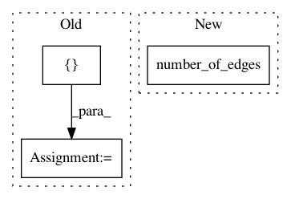

cd484352064fc81e86ceb0ba2eb470e3aa8a72f3,python/dgl/transform.py,,add_reverse_edges,#Any#Any#Any#Any#Any#,231
Before Change
new_g.edges[c_etype].data[k] = g.edges[c_etype].data[k]
else:
for k in g.edges[c_etype].data:
new_g.edges[c_etype].data[k] = \
F.cat([g.edges[c_etype].data[k], g.edges[c_etype].data[k]], dim=0)
return new_g
def line_graph(g, backtracking=True, shared=False):
Return the line graph of this graph.
After Change
// find indices
eids = []
for c_etype in canonical_etypes:
eid = F.copy_to(F.arange(0, g.number_of_edges(c_etype)), new_g.device)
if c_etype[0] != c_etype[2]:
eids.append(eid)
else:
In pattern: SUPERPATTERN
Frequency: 3
Non-data size: 3
Instances
Project Name: dmlc/dgl
Commit Name: cd484352064fc81e86ceb0ba2eb470e3aa8a72f3
Time: 2020-08-12
Author: coin2028@hotmail.com
File Name: python/dgl/transform.py
Class Name:
Method Name: add_reverse_edges
Project Name: dmlc/dgl
Commit Name: 0ec1a492b302561d7417f3087e1fce09cdd38706
Time: 2018-11-21
Author: minjie.wang@nyu.edu
File Name: python/dgl/graph.py
Class Name: DGLGraph
Method Name: __init__
Project Name: pfnet-research/chainer-chemistry
Commit Name: 4226fe25eb4facabd587893f2b1f960c34edd7c1
Time: 2019-09-18
Author: abe.kenshin@gmail.com
File Name: chainer_chemistry/dataset/networkx_preprocessors/base_networkx.py
Class Name: BaseSparseNetworkxPreprocessor
Method Name: construct_data